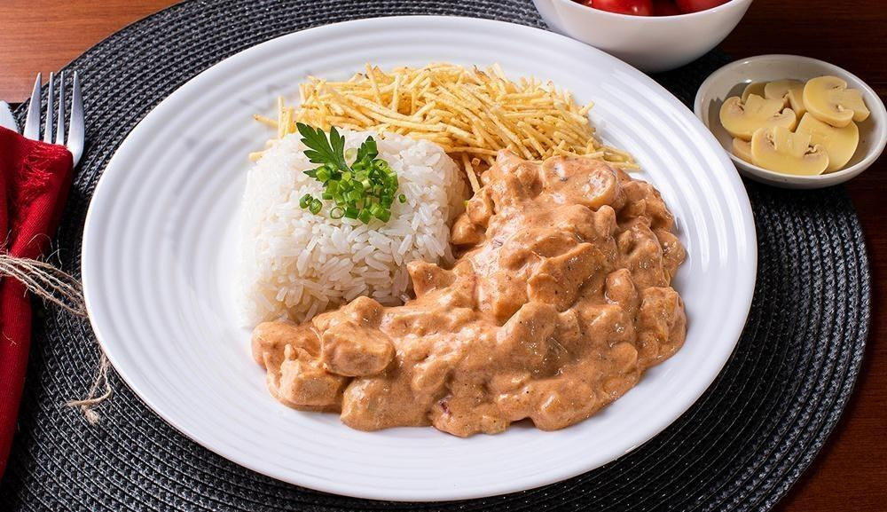

Chicken Stroganoff

Chicken Stroganoff is a beloved dish that's incredibly easy to make! The combination of succulent chicken and creamy sauce will make anyone salivate just thinking about it.
- 3 boneless, skinless chicken breasts, cut into cubes
- Salt to taste
- 1 onion, chopped
- 1 tablespoon butter
- 1/3 cup mustard
- 1 cup heavy cream
- 1 clove garlic, minced
- Black pepper to taste
- 2 tablespoons mayonnaise
- 1/2 cup ketchup
- 1 cup mushrooms
- Crinkle-cut fries to taste
- In a bowl, combine the chicken, garlic, mayonnaise, salt, and pepper.
- In a large skillet, melt the butter and sauté the onion until softened.
- Add the seasoned chicken to the skillet and cook until browned.
- Stir in the mushrooms, ketchup, and mustard.
- Pour in the heavy cream and remove from heat before boiling.
- Serve over white rice with crinkle-cut fries.